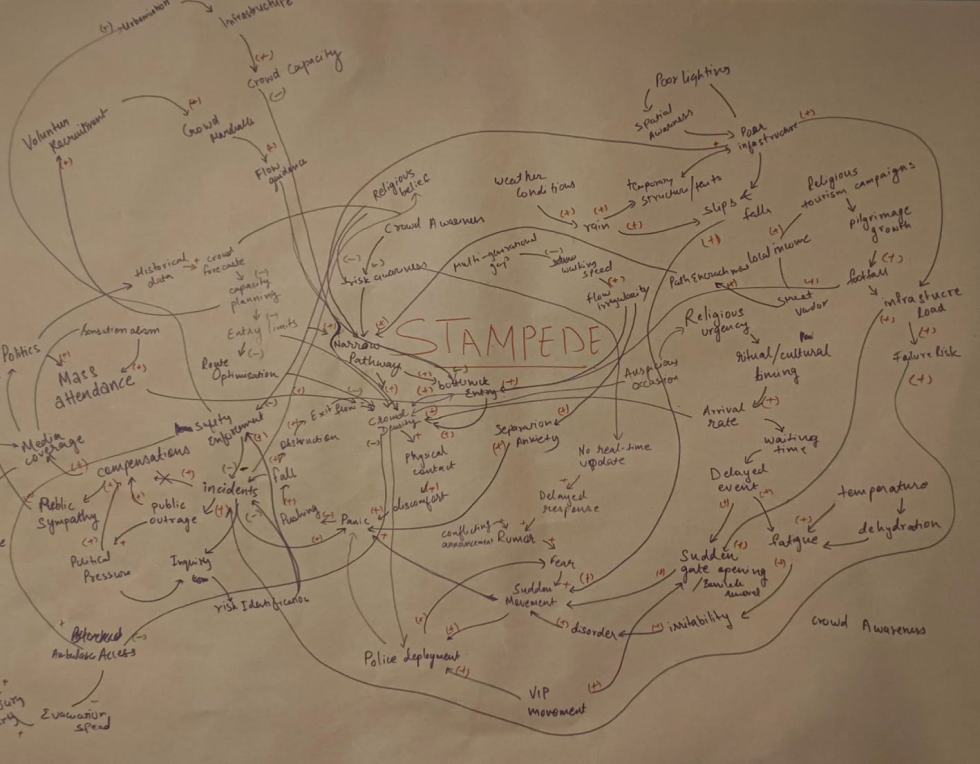
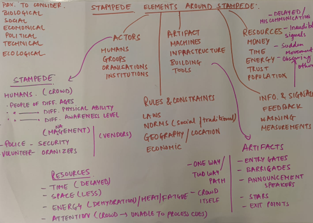
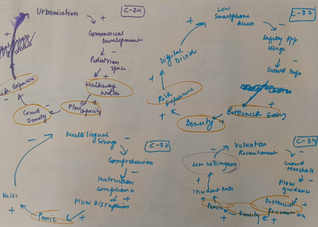
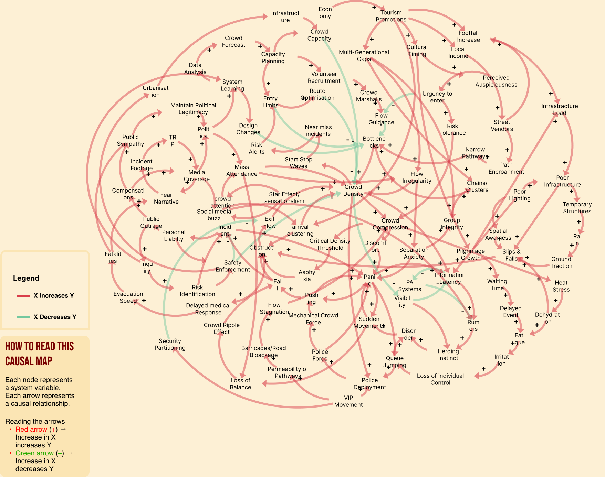

TL;DR
What lies beneath the crowd?
How do space, information, governance and human behaviour combine to create crowd disasters?
Follow the relationships.
Secondary research, stakeholder mapping and causal analysis made the system’s interdependencies visible.
A giga map.
A shared view of the system, its failure patterns and possible points of intervention.
Explore the final map ↗Looking beyond a single incident.
This three-week academic study at Anant National University examined crowd disasters in India through systems thinking. We explored how cultural beliefs, environmental conditions, infrastructure and authority decisions interact during mass gatherings.
- 01
Understand systems
Identify interconnected elements within a complex social issue.
- 02
Research incidents
Study past events, media reports and institutional responses.
- 03
Map causality
Trace relationships and feedback loops across the system.
- 04
Find leverage
Locate points where change could have a wider effect.
- 05
Explore interventions
Propose changes to policy, communication and accountability.
Tripti Sethia · Mishan Patel · Aman Choudhary · Sanika Shedge · Jeevitesh Gaur
Guided by Tenzing Nyentsey
Where the patterns emerge.
The secondary-research chart groups incidents by setting. Religious places form the largest category in this project’s compilation.
Religious places
The largest category in the research chart, bringing attention to pilgrimage routes and mass religious gatherings.
Counts reproduced from the project’s secondary-research chart, covering 2001–2025. These are category counts in the research compilation, not a complete national dataset.
How pressure becomes a crisis.
A single trigger is only one part of the story. Explore the team’s conceptual sequence to see how information, movement and physical pressure interact.
Before the trigger
Density builds while movement still feels ordinary. Social norms and helping behaviour prevail.
The pressure is building before the disruption becomes visible.
A conceptual research model, not a real-time simulation or a prediction of every incident.
Power and exposure are uneven.
The people most affected are not always the people who can make decisions. This matrix groups stakeholders by the power and interest assigned in our research.
Explore a stakeholder to see its group. Positions show qualitative groupings, not measured scores.
From working notes to a connected map.



Six connected patterns.
The causal map brought together the forces that can reinforce one another. Select a cluster to trace a short relationship from the study and the leverage point it suggests.
Spatial traps
Narrow pathways, footbridges, stairs and poorly placed barricades concentrate crowd pressure. Poor lighting and encroachment make these constraints harder to navigate.
- Narrow paths
- Bottlenecks
- Concentrated pressure
A point to interveneSpatial geometry and flow

Where could the system change?
We moved from individual failure points to places where decisions, information and spatial design could change the wider system.
01Set limits before the event
Crowd density limits, entry rates and maximum holding capacity.
02Clarify who can act
A defined chain of command for escalation and decisions.
03Design for flow
Pathway width, visibility, turns, slopes and separated entry and exit flows.
04Find the choke points
Systematic identification and removal of bottlenecks.
05Make signals consistent
Standardised communication that avoids contradictory instructions.
06Close the accountability loop
Post-event reviews that connect failures to corrective changes.
07Make safety familiar
Repeated safety cues embedded in the environment.
Proposals at the system level.
These directions extend the mapping into possible interventions. They are academic proposals, not implemented or validated outcomes.
One shared command
A unified on-site command and shared live map across police, transport, venue operations, medical teams and organisers.
An accountable safety lead
One named executive with authority over entry throttling, rerouting and shutdown, with clearly allocated duties.
A record of compliance
A registry of compliant and repeat-offender organisers and venues informing future permits and insurance.
Alerts beyond mobile data
Local Bluetooth beacons and redundant SMS and FM alerts; a concept for priority emergency corridors.
Visible stress and care
An on-site index of heat, fatigue, wait time and density, alongside water, seating and first-aid support.
The final giga map.
One artefact connects incident patterns, stakeholders, causes, leverage points and proposed directions. Explore the original map in detail.
Zoom to explore · Drag to move · Arrow keys to pan
Original artwork and research by the project team. View the source in Figma ↗
From problem-solving to system-shaping.
This project changed how we looked at design: how people move, how institutions decide, how information flows and how power is exercised. Mapping made hidden incentives and mental models visible, and taught us to look for relationships before proposing a solution.